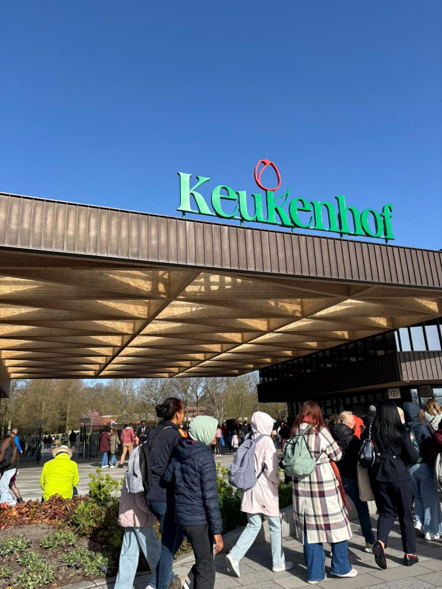
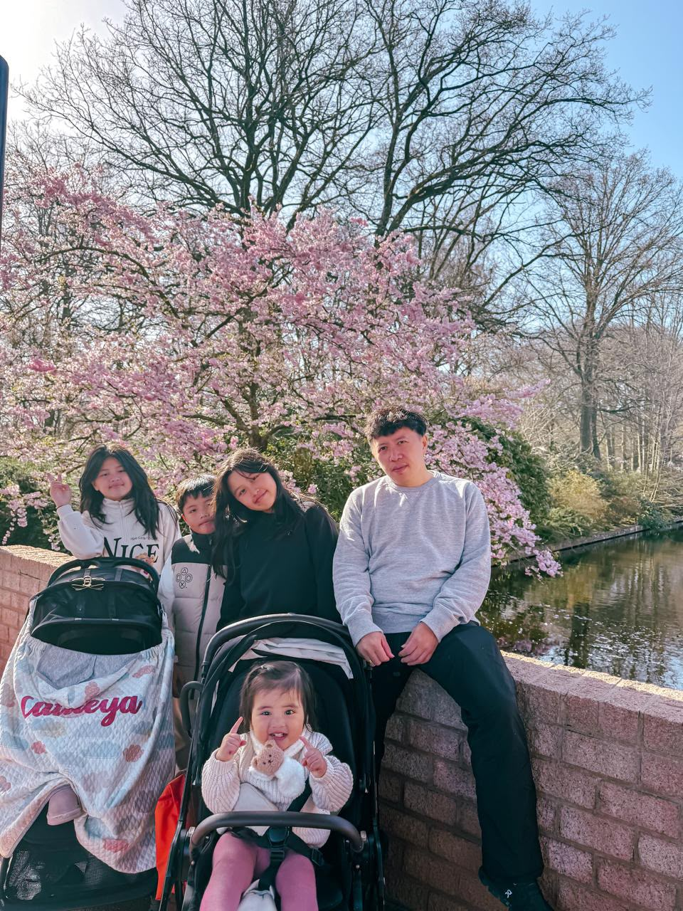

Keukenhof Garden in the Netherlands
Keukenhof Garden is one of the most famous flower gardens in Europe and one of the largest spring flower gardens in the world. It is located in Lisse, Netherlands, and covers about 32 hectares. Keukenhof is famous for its beautiful and colorful flowers, especially tulips. Every spring, millions of flowers bloom in the garden, making the whole place look very colorful and beautiful. Many people from different countries visit Keukenhof every year because they want to see the flowers and enjoy the beautiful scenery. The garden is also one of the places that shows the beauty of Dutch nature and flower culture. One interesting thing about Keukenhof is that it is not open throughout the whole year. The garden is usually open for only about eight weeks in spring. This is because Keukenhof depends on the natural blooming season of the flowers. The flowers need the right weather and temperature to grow and bloom beautifully. Because of this, the gardeners have to plan everything carefully. They choose different types of flowers so that there will still be many flowers blooming during the whole opening period. Even though Keukenhof is only open for a short time, it attracts a very large number of visitors every year.
Because Keukenhof depends completely on the natural seasonal blooming of flowers, it is only open to the public for about eight weeks each spring. During these weeks, the flowers bloom at their best and create colorful views throughout the park. People from many different countries visit the garden every year to enjoy the beautiful scenery. The garden is also a popular place for photography because of its colorful flowers and peaceful environment.

Colorful spring flowers at Keukenhof
The name “Keukenhof” has an interesting history. The word “Keukenhof” means “Kitchen Garden” in Dutch. The name comes from the 15th century, when the area was used to provide fresh herbs and vegetables for the kitchen of Countess Jacoba van Beieren's castle. At that time, Keukenhof was not yet a flower exhibition garden. In the 1950s, the area was transformed into a public flower exhibition garden by a group of leading bulb growers.
Today, Keukenhof Garden is one of the most famous spring gardens in the world. It is especially well known for its tulips, but visitors can also see many other types of spring flowers in different colors and arrangements. I think Keukenhof Garden is an interesting place because it has both natural beauty and an interesting history. Overall, Keukenhof Garden is a beautiful destination that represents the colorful and cheerful feeling of spring in the Netherlands.